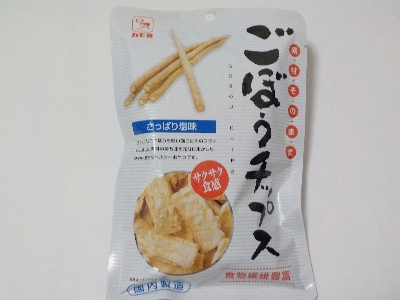

カモ井デリカのごぼうチップス。
更新日 : 2024/05/31

ごぼうがとっても薄いので、衣のパリパリ感とかサクサク感がいいですね。あと、ごぼうの土っぽさとか筋っぽさも少なかったです。
塩と油の味が、なんとなくハウス食品のオーザックっぽいって思いました。
塩が効いているのでお酒のおつまみにピッタリです。
岡山県倉敷市中島1138
更新日 : 2024/05/31

ごぼうがとっても薄いので、衣のパリパリ感とかサクサク感がいいですね。あと、ごぼうの土っぽさとか筋っぽさも少なかったです。
塩と油の味が、なんとなくハウス食品のオーザックっぽいって思いました。
塩が効いているのでお酒のおつまみにピッタリです。